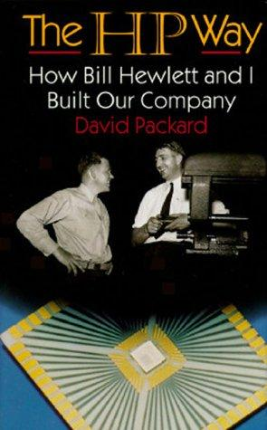

Library › History
The HP Way: How Bill Hewlett and I Built Our Company — Summary & Key Lessons

Five hundred thirty-eight dollars, a Palo Alto garage, and a management philosophy that invented Silicon Valley's soul before it had a name.
📖 OPEN THE FULL INTERACTIVE BREAKDOWN →🌐 Read it in Hindi, Hinglish, Gujarati, Tamil & 22 more languages — free, with audio.
💡 The Big Idea
Packard tells the founding story (Stanford friends, $538 in 1939, the Palo Alto garage, the audio oscillator Disney bought for Fantasia) and the management invention that outlived the products: the HP Way. Its elements: management by objectives (state the goal, let people find the way), open labs and components (engineers could take anything, trusting them raised integrity), no time clocks, profit sharing, decadal loyalty (HP famously avoided layoffs: everyone took a 10 percent pay cut and shorter hours in the 1970s downturn instead), MBWA (management by walking around), and product-first (build the best instrument, the marketing follows). The book is the source code of Silicon Valley culture (garage myth, engineer dignity, stock programs) written by its grandfather, and its coda (HP's post-merger drift, the linked case study's Autonomy disaster) is the cautionary measure of what was lost.
🧠 The 8 Key Lessons
Lesson 1: Start With a Product That Solves a Named Problem
The Garage and Disney
HP's first product (the 200B audio oscillator) existed because a customer needed a cheaper, better instrument; Disney bought eight for Fantasia's soundtrack. Bill and Dave built to a named need with engineering superiority, bootstrapped without debt, and reinvested profits. The founding law: great companies begin as solutions to someone's expensive problem, not as platforms seeking a market.
📖 Example: Priced at $54 (versus competitors' $200+ machines), the oscillator's engineering (a night-light bulb as stabilizer) delivered reliability at a tenth of the price, the pattern HP repeated for decades. Read the full example →
⚡ Do this: Name the expensive problem your first product solves and the customer who pays to solve it. If neither sentence survives a cold read, iterate the problem before scaling the product.
Lesson 2: Management by Objectives: Define the What, Free the How
MBO Before It Was a Buzzword
HP's version of MBO predates the consulting industry's version: leaders stated objectives clearly and then trusted people to find methods, reviewing results rather than activity. The contrast with command-and-control wasn't permissiveness; it was precision about goals paired with humility about paths. The discipline: objectives not written down become opinions; methods not left free become bottlenecks.
📖 Example: Engineers describe being handed a performance target and a deadline, then left alone with the lab; HP's patent output per engineer was legendary because the 'how' belonged to the builder. Read the full example →
⚡ Do this: Rewrite each team member's current assignment as a measurable objective plus a constraint (budget, values), and explicitly retire one method-level instruction you issued this month.
Lesson 3: Trust Is a Policy With Locks Removed
Open Labs and the Parts Bin
HP kept component storerooms and labs open (engineers took parts home, no sign-outs), a trust policy that occasionally cost inventory and reliably produced integrity, loyalty and home-lab innovation. The principle: surveillance culture produces compliance; trust culture produces owners. The cost of trust (shrinkage) was smaller than the value of what trust built.
📖 Example: Engineers recount fixing products at home on weekends because parts were accessible, and the few thefts never justified converting the company into a police state, per Packard's explicit accounting. Read the full example →
⚡ Do this: Remove one control or approval gate that treats your best people as suspects, and replace it with a written trust statement plus audit-after-the-fact. Measure what gets built, not what gets taken.
Lesson 4: Shared Pain Beats Layoffs in a Downturn
The 10 Percent Solution
In the 1970-71 downturn, HP cut everyone's pay 10 percent and the workweek 10 percent rather than lay off 10 percent of people: shared pain preserved skills, loyalty and recovery speed. The economics are contestable at scale (and HP later abandoned the practice), but the trust dividend in engineering cultures was real. The lesson: how you survive a downturn is remembered longer than how fast you grow in an upturn.
📖 Example: Employees who took the cut tell of decadal loyalty formed in that quarter; several later refused higher offers, pricing the trust above the salary delta. Read the full example →
⚡ Do this: Draft your downturn protocol now: the order of cost cuts (travel, contractors, exec pay, salaries, layoffs last), written and shared before the downturn, so the crisis doesn't write it for you.
Lesson 5: Walk Around: Management Is Field Work
MBWA
The HP Way's famous practice (management by walking around): leaders spent hours in labs and on customer visits, informal, listening, no agendas. Information flowed upward undistorted, and decisions arrived with context. The practice fails when it becomes theater; it works when leaders arrive with questions and leave with notes. In remote-era companies, the walk is a call to a customer or an engineer's screen-share; the discipline survives the medium.
📖 Example: Packard and Hewlett knew engineers by name and project; product decisions routinely reversed after a lab conversation revealed what reports had flattened. Read the full example →
⚡ Do this: Book three unscripted walk-arounds this week (lab, support queue, customer call). Bring two questions, take notes, change one thing within 48 hours and tell them who changed it.
Lesson 6: Profit Sharing Aligns the Crew With the Voyage
Everyone Owns a Piece
HP's profit-sharing and stock-purchase programs (early, broad) made employees investors in outcomes, aligning thousands of daily micro-decisions with company results. The design insight: shared upside is the cheapest incentive system ever built (it pays from value created), and its signal (we're all crew, not staff) recruits the identity that salaries cannot.
📖 Example: HP veterans describe profit-sharing checks as the moment 'the company' became 'our company', a semantic shift that showed up in voluntary overtime and ideas volunteered upward. Read the full example →
⚡ Do this: Design one profit- or outcome-sharing mechanism for your team (even 5 percent of a line item), with a transparent formula. Ownership language follows ownership economics, never the reverse.
Lesson 7: Protect the Culture From Your Own Success
Growth vs the HP Way
Packard admits the tension: scale, geographies and the 1980s-90s numbers culture strained the practices (open labs got harder, MBO hardened into bureaucratic performance theater). Culture is not self-sustaining; it must be re-taught as the company changes generations. The linked case study (the Autonomy acquisition write-down under later leadership) is the outer edge of what happens when the way becomes a museum exhibit.
📖 Example: Packard's own chapters on growth pains read as warnings: every practice that made HP special required active defense (budgets, rituals, founders' time) against the efficiency logic that growth imports. Read the full example →
⚡ Do this: List your three cultural practices that scale badly. For each, write the next-size version (how it survives at 10x) or schedule its conscious retirement before growth retires it for you.
Lesson 8: Values Compound Louder Than Products
The Way Outlives the Instruments
HP's instruments led markets for decades, but the company's deepest export was managerial: the HP Way seeded Silicon Valley's culture (garage lore, engineer dignity, stock ownership, trust as policy). Products have cycles; values compound through the people who carry them out the door. The closing lesson for founders: you are building two things, the company and the way the company does things; the second one travels furthest.
📖 Example: The garage (now a registered landmark) matters less than the playbook it symbolizes: dozens of Valley founders cite the HP Way explicitly, a talent and culture dividend no product roadmap ever planned. Read the full example →
⚡ Do this: Write the 'way' of your company on one page (the practices a visitor would notice). That page, kept honest, is the only part of your company guaranteed to outlive its products.
✅ 5-Step Action Plan
- Rewrite assignments as objectives plus constraints; retire one method instruction.
- Remove one suspect-them control and replace it with stated trust plus after-audit.
- Draft and share your downturn protocol (cuts order) before the downturn.
- Do three unscripted walk-arounds weekly; change one thing within 48 hours.
- Write your company's one-page 'way' and review it at every growth stage.
⚠️ When This Doesn't Work
Packard writes as the company's beloved co-founder: internal conflicts, missteps (HP's own late-80s struggles get light treatment) and the perspectives of employees who found the Way imperfect are smoothed. The practices are era-bound (some trust policies suit 1950s lab economics more than 2020s compliance regimes). The later HP (Compaq merger wars, the Autonomy write-down: our linked case study) shows the Way's erosion the book could not. Read it as the founding text of a management culture, read the case study as its autopsy.
💀 The Graveyard Proves It
🖨️ HP + Autonomy — Paid $11B, Wrote Off $8.8B Within a Year. Burn: $8.8B writedown — 79% of the price. Read the full case study →
💬 Best Quotes from The HP Way: How Bill Hewlett and I Built Our Company
- “Our success was built on trust: trust in our people, trust in our customers, trust in our suppliers.”
- “You cannot manage by objectives what you have not first defined by values.”
- “We never forgot that the company existed to build products people would love to use.”
Interactive version: mark lessons as read, listen in your language, share quote cards.